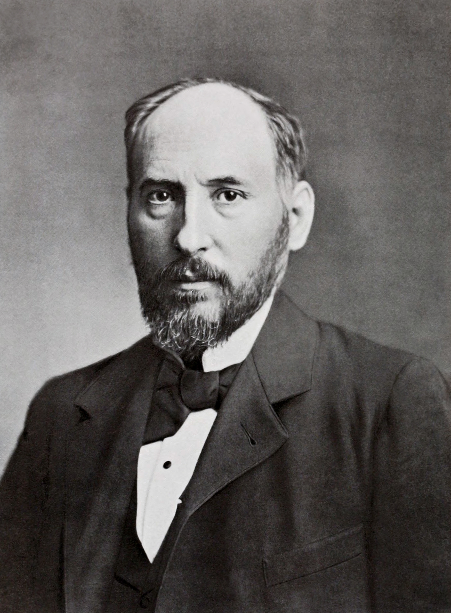
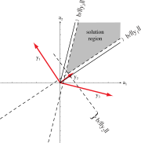
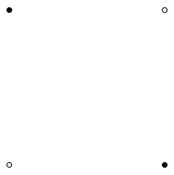
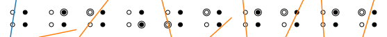
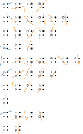
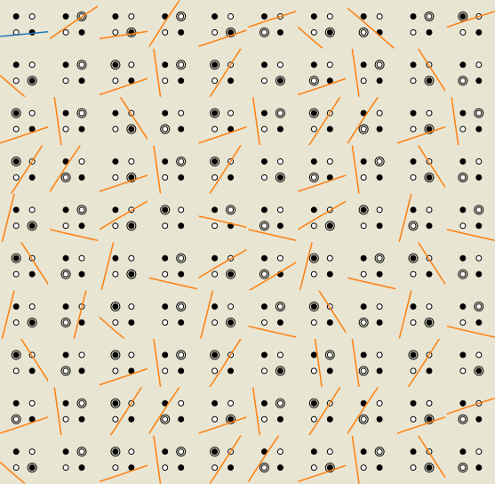
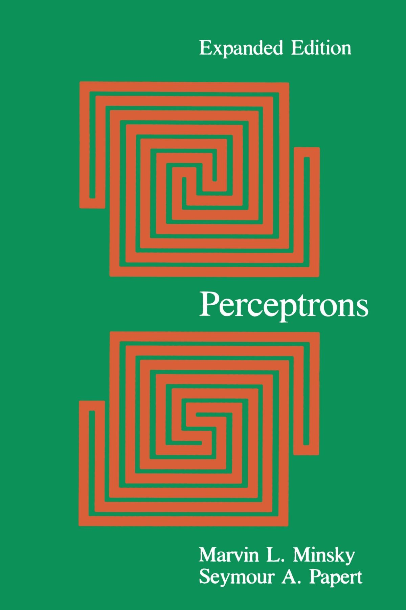

Advanced Machine Learning
04: Linear learning models
Schedule (you are here )
| # | date | topic | description |
|---|---|---|---|
| 1 | 24-Aug-2026 | Introduction | |
| 2 | 26-Aug-2026 | Foundations of learning | Drop/Add |
| 3 | 31-Aug-2026 | PAC learnability | HW1 |
| 4 | 02-Sep-2026 | Linear learning models | |
| 5 | 07-Sep-2026 | Labor Day Holiday | Holiday |
| 6 | 09-Sep-2026 | Principal Component Analysis | Project ideas |
| 7 | 14-Sep-2026 | Curse of Dimensionality | HW2, HW1 due |
| 8 | 16-Sep-2026 | Bayesian Decision Theory | |
| 9 | 21-Sep-2026 | Parameter estimation: MLE | |
| 10 | 23-Sep-2026 | Parameter estimation: MAP & NB | finalize teams |
| 11 | 28-Sep-2026 | Logistic Regression | HW3, HW2 due |
| 12 | 30-Sep-2026 | Kernel Density Estimation | |
| 13 | 05-Oct-2026 | Support Vector Machines | |
| 14 | 07-Oct-2026 | Matrix Factorization | |
| 15 | 12-Oct-2026 | * Midterm | Exam, HW3 due |
| 16 | 14-Oct-2026 | k-means clustering | |
| 17 | 19-Oct-2026 | Invited: Intro to Causal Learning I |
| # | date | topic | description |
|---|---|---|---|
| 18 | 21-Oct-2026 | Invited: Intro to Causal Learning II | |
| 19 | 26-Oct-2026 | * Mid-point projects checkpoint | HW4, P |
| 20 | 28-Oct-2026 | Expectation Maximization | |
| 21 | 02-Nov-2026 | Stochastic Gradient Descent | |
| 22 | 04-Nov-2026 | Automatic Differentiation | |
| 23 | 09-Nov-2026 | Nonlinear embedding approaches | HW5, HW4 due |
| 24 | 11-Nov-2026 | Model comparison | |
| 25 | 16-Nov-2026 | Model Calibration | |
| 26 | 18-Nov-2026 | Convolutional Neural Networks | |
| 27 | 23-Nov-2026 | Thanksgiving Break | Holiday |
| 28 | 25-Nov-2026 | Thanksgiving Break | Holiday |
| 29 | 30-Nov-2026 | Word Embedding | |
| 30 | 02-Dec-2026 | Project Final Presentations | HW5 due, P |
| 31 | 07-Dec-2026 | Presentation spillover / Exam prep | Classes End |
| 32 | 09-Dec-2026 | * Final Exam | Exam |
| 33 | 16-Dec-2026 | Project Reports | due |
| 34 | 17-Dec-2026 | Grades due 5 p.m. | PAWS |
Outline for the lecture
- Linear decision boundary
- Perceptron
- Perceptron extensions
- Non-separable case
Linear Decision Boundary
A Hyperplane

A Hyperplane
-1.50
0°
g(x) = wTx + w0 = +1.24
r = g(x)⁄‖w‖ = +1.24 (‖w‖ = 1.00)
Dist(0, H) = |w0|⁄‖w‖ = 1.50
Drag on canvas to rotate 3D view
Affine Hyperplane & Homogeneous Coordinates
2D Line: wTx + w0 = 0
Homogeneous Lift: x̃ = (x1, x2, 1)T | w̃ = (w1, w2, w0)T
Drag to orbit 3D view
135°
-0.50
An example!

Solution region

Example: linear separability

Perceptron
A Hyperplane

Ramon y Cajal
A Neuron

A Perceptron

Criterion (objective)
$$ J(\vec{w}) = -\sum_{\text{incorrect } i} l_i\vec{w}^Tx_i$$ $\vec{w}$ - parameters of our model (the perceptron)Batch Perceptron
${\cal Y}$ is the set of samples misclassified by $\vec{w}$
Stochastic Perceptron
Stochastic Algorithm Convergence theorem
If the training samples are linearly separable then the sequence of weight vectors in line 4 of Algorithm 2 will terminate at a solution vector.
Proof
Let us show that for any solution $\widetilde{\vec{w}}$ the following holds:
$$\|\vec{w}_{k+1} - \widetilde{\vec{w}}\| \le \|\vec{w}_{k} - \widetilde{\vec{w}}\| $$
Proof (1/3)
$\vec{w}_{k+1} = \vec{w}_k + l_k \vec{x}_k$
$l_k \widetilde{\vec{w}}^T\vec{x}_k > 0$
$\vec{w}_{k+1} - \alpha \widetilde{\vec{w}} = (\vec{w}_k - \alpha \widetilde{\vec{w}}) + l_k \vec{x}_k$
$\|\vec{w}_{k+1} - \alpha \widetilde{\vec{w}}\|^2 = \|(\vec{w}_k - \alpha \widetilde{\vec{w}}) + l_k \vec{x}_k\|^2$
$\|\vec{w}_{k+1} - \alpha \widetilde{\vec{w}}\|^2 = \|\vec{w}_k - \alpha \widetilde{\vec{w}}\|^2 + 2(\vec{w}_k - \alpha \widetilde{\vec{w}})^T\vec{x}_kl_k + \|l_k \vec{x}_k\|^2$
$\|\vec{w}_{k+1} - \alpha \widetilde{\vec{w}}\|^2 = \|\vec{w}_k - \alpha \widetilde{\vec{w}}\|^2 + 2\vec{w}_k^T\vec{x}_kl_k - 2\alpha \widetilde{\vec{w}}^T\vec{x}_kl_k + \|l_k \vec{x}_k\|^2$
$\vec{w}_{k}^Tl_k \vec{x}_k \le 0$ since $\vec{x}_k$ was misclassified
$\|\vec{w}_{k+1} - \alpha \widetilde{\vec{w}}\|^2 \le \|\vec{w}_k - \alpha \widetilde{\vec{w}}\|^2 - 2 \alpha \widetilde{\vec{w}}^Tl_k \vec{x}_k + \|l_k \vec{x}_k\|^2$
Proof (2/3)
$\|\vec{w}_{k+1} - \alpha \widetilde{\vec{w}}\|^2 \le \|\vec{w}_k - \alpha \widetilde{\vec{w}}\|^2 - 2 \alpha \widetilde{\vec{w}}^Tl_k \vec{x}_k + \|l_k \vec{x}_k\|^2$
$\beta^2 = \underset{k}{\max}\|l_k \vec{x}_k\|^2 = \underset{k}{\max} \|\vec{x}_k\|^2$
$\gamma = \underset{k}{\min}\left[ \widetilde{\vec{w}}^T \vec{x}_kl_k\right] > 0$
$\|\vec{w}_{k+1} - \alpha \widetilde{\vec{w}}\|^2 \le \|\vec{w}_k - \alpha \widetilde{\vec{w}}\|^2 - 2 \alpha \gamma + \beta^2$
$\alpha = \frac{\beta^2}{\gamma}$
$\|\vec{w}_{k+1} - \alpha \widetilde{\vec{w}}\|^2 \le \|\vec{w}_k - \alpha \widetilde{\vec{w}}\|^2 - \beta^2$
The distance to solution is reduced by at least $\beta^2$ at each iteration.
The distance to solution is reduced by at least $\beta^2$ at each iteration.
Proof (3/3)
$\|\vec{w}_{k+1} - \alpha \widetilde{\vec{w}}\|^2 \le \|\vec{w}_k - \alpha \widetilde{\vec{w}}\|^2 - \beta^2$
The distance to solution is reduced by at least $\beta^2$ at each iteration.
The distance to solution is reduced by at least $\beta^2$ at each iteration.
After $k$ iterations:
$\|\vec{w}_{k+1} - \alpha \widetilde{\vec{w}}\|^2 \le \|\vec{w}_1 - \alpha \widetilde{\vec{w}}\|^2 - k\beta^2$
$\|\vec{w}_{k+1} - \alpha \widetilde{\vec{w}}\|^2 \le \|\vec{w}_1 - \alpha \widetilde{\vec{w}}\|^2 - k\beta^2$
The distance cannot become negative, so no more than $k_0$ iterations:
$k_0 = \frac{\|\vec{w}_1 - \alpha \widetilde{\vec{w}}\|^2}{\beta^2}$
$k_0 = \frac{\|\vec{w}_1 - \alpha \widetilde{\vec{w}}\|^2}{\beta^2}$
Setting initial paramters to zero $\vec{w}_1 = \vec{0}$:
$k_0 = \frac{\alpha^2\|\widetilde{\vec{w}}\|^2}{\beta^2} = \frac{\beta^2\|\widetilde{\vec{w}}\|^2}{\gamma^2} = \frac{\underset{i}{\max} \|\vec{x}_i\|^2\|\widetilde{\vec{w}}\|^2}{\underset{i}{\min}\left[l_i\vec{x}_i^T\widetilde{\vec{w}}\right]}$
$k_0 = \frac{\alpha^2\|\widetilde{\vec{w}}\|^2}{\beta^2} = \frac{\beta^2\|\widetilde{\vec{w}}\|^2}{\gamma^2} = \frac{\underset{i}{\max} \|\vec{x}_i\|^2\|\widetilde{\vec{w}}\|^2}{\underset{i}{\min}\left[l_i\vec{x}_i^T\widetilde{\vec{w}}\right]}$
Perceptron Extensions
Margin


Perceptron with Margin
Interactive Demo: Perceptron with Margin
0.00

Perceptron Relaxation
Interactive Demo: Perceptron Relaxation
1.0
0.8
Non-separable case

Separable example

Multiple restarts

Non-separable example

AI winter

What we usually encounter

Criterion (objective/loss)
$$ J(\vec{w}) = -\sum_{\text{incorrect } i} l_i\vec{w}^T\vec{x}_i$$ $\vec{w}$ - parameters of our model (the perceptron) $$ J_{\text{MSE}}(\vec{w}) = \frac{1}{2}\sum_{\forall i} (\vec{w}^T\vec{x}_i - b_i)^2$$ $$ \nabla_{\vec{w}} J_{\text{MSE}} = \sum_{\forall i} (\vec{w}^T\vec{x}_i - b_i)\vec{x}_i$$Least Mean Squares

Least Mean Squares Pitfalls

Why does LMS fail for classification? Squared loss penalizes points that are "too correct"!
Failure of LMS for Classification: Outlier Sensitivity
4.0
LMS (MSE)
Perceptron / Logistic
Multi-class Masking

Linear regression fits can completely mask intermediate classes.
Take Home Points
Linear Learning Models
Take Home Points
- Hyperplane: $\vec{w}$ is normal, $\frac{|w_0|}{\|\vec{w}\|}$ is distance to origin, $r = \frac{g(\vec{x})}{\|\vec{w}\|}$ signed distance.
- Affine Lift: $\mathbb{R}^d \to \mathbb{R}^{d+1}$ turns affine line into origin hyperplane $\tilde{\vec{w}}^T\tilde{\vec{x}} = 0$.
- Perceptron: Guaranteed finite convergence for linearly separable data.
- Margin & Relaxation: Margin $\gamma$ creates buffer; Relaxation scales step by distance $r(k)$.
- LMS Pitfall: Squared loss penalizes "too-correct" points and masks classes.